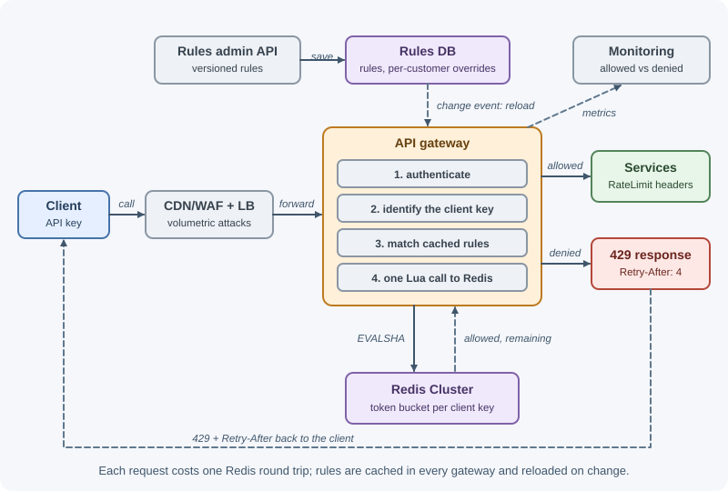
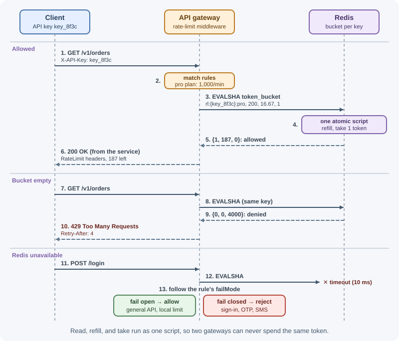

Case Study: Distributed Rate Limiter¶
A rate limiter decides, for every incoming request, whether the client is still within its allowance — for example, 1,000 requests per minute for a paid API key, or 5 sign-in attempts per 15 minutes per account. In a distributed system with dozens of gateway or service instances, the hard parts are keeping counts accurate across instances, adding almost no latency, and staying safe when the limiter's own storage fails.
Requirements¶
Functional¶
- Limit requests per client key: API key, user ID, or IP address.
- Support multiple rules per request: per plan tier (free, pro,
enterprise), per endpoint (stricter limits on
POST /loginor/v1/exports), and global per-client limits. - Allow short bursts while enforcing an average rate.
- Reject over-limit requests with
429 Too Many Requests,Retry-After, and rate-limit headers; tell allowed requests how much quota remains. - Change rules and per-customer overrides without a redeploy.
- A shadow (dry-run) mode to test new rules by logging would-be rejections.
Non-functional¶
- Low latency: adds under ~2 ms at p99 to each request.
- Accurate enough: consistent counts across all instances; small over-admission during failures is tolerable, systematic multiplication of limits is not.
- Highly available: a limiter failure must not take the API down.
- Scalable: handle the platform's peak request rate.
- Observable: metrics on allowed and rejected requests per rule and client.
Capacity estimates¶
Assumptions: 1 million requests per second at peak across the API platform; on average 2 rules evaluated per request; 50 million distinct client keys per day; ~100 bytes of state per (rule, client) key in Redis, including overhead.
Checks per second = 1,000,000 req/s × 2 rules = 2,000,000 rule checks/s
With one Lua call per request (rules colocated, see deep dive 4)
→ ~1,000,000 Redis script calls/s
Redis throughput: a script call costs more than a plain GET; assume a
conservative ~50,000–100,000 script calls/s per shard (measure!)
→ ~10–20 primary shards, each with a replica
Memory = 50 M clients × 2 rules × 100 B = 10 GB (+ replicas)
Latency budget: same-zone Redis round trip ≈ 0.3–0.5 ms → fits in 2 ms
Conclusions: memory is small; throughput and latency drive the design. The counter store must be sharded, and each request should need one round trip.
API design¶
The limiter runs inside the API gateway (or as a shared middleware library); there is no extra network hop to a separate service. Its internal interface:
check(request) → { allowed: boolean,
rule: "pro-api-default",
limit: 1000, remaining: 412,
resetSeconds: 23, retryAfterSeconds: 0 }
Rule management API (internal, admin-only):
PUT /v1/rate-limit-rules/pro-api-default
{ "match": { "pathPrefix": "/v1/", "plan": "pro" },
"key": "apiKey",
"algorithm": "token_bucket",
"capacity": 200, (burst size)
"refillPerSecond": 16.67, (≈ 1,000 per minute)
"mode": "enforce" } ("shadow" logs only)
200 OK { "id": "pro-api-default", "version": 7 }
What clients see:
HTTP/1.1 200 OK
RateLimit-Policy: "default";q=1000;w=60
RateLimit: "default";r=412;t=23
HTTP/1.1 429 Too Many Requests
Retry-After: 4
RateLimit-Policy: "default";q=1000;w=60
RateLimit: "default";r=0;t=4
Content-Type: application/problem+json
{ "type": "https://api.example.com/problems/rate-limited",
"title": "Too many requests", "status": 429,
"detail": "Limit of 1000 requests per minute exceeded for this API key.",
"retryAfterSeconds": 4 }
RateLimit-Policy and RateLimit follow the IETF rate-limit header fields
draft; the exact syntax has changed between drafts, so many APIs still also
send the older X-RateLimit-Limit, X-RateLimit-Remaining, and
X-RateLimit-Reset. Retry-After is standard (RFC 9110). See
HTTP headers.
Data model¶
Rules (source of truth in a database or config repository; cached in every gateway's memory):
| Field | Example | Notes |
|---|---|---|
id |
pro-api-default |
Unique |
match |
path prefix, method, plan tier | Most specific rule wins |
key |
apiKey, userId, ip, ip+email |
What is counted |
algorithm |
token_bucket, sliding_window |
|
capacity / refillPerSecond |
200 / 16.67 | Token bucket parameters |
limit / windowSeconds |
5 / 900 | Window algorithm parameters |
mode |
enforce, shadow |
Shadow logs instead of blocking |
failMode |
open, closed |
Behavior when Redis is unavailable |
version |
7 | Gateways reload on change |
Per-client overrides: (clientKey, ruleId) → custom limits for
negotiated enterprise contracts.
Counter state (Redis):
key: rl:{api_key_8f3c}:pro-api-default (hash)
value: { tokens: "187.4", ts: "1793812345123" } (tokens left, last refill ms)
TTL: time to refill the bucket completely (state disappears when idle)
The {api_key_8f3c} part is a Redis Cluster hash tag: only the text in
braces is hashed, so all of one client's rule keys land in the same slot and
can be updated by one script.
High-level design¶

Request path:
- The gateway authenticates the request and determines the client key — API key or user ID from the verified credentials; for anonymous traffic, the client IP, correctly derived behind proxies (see rate limiting and throttling).
- It matches the request against cached rules (path, method, plan).
- It runs one atomic Lua script in Redis covering all matching rules.
- If any enforced rule denies, it returns
429with headers. Otherwise it forwards the request with the remaining-quota headers. - It records metrics; shadow-mode denials are logged but not enforced.
Rule update path: an admin updates a rule → the rules DB increments the version → a change event (pub/sub) tells gateways to reload; gateways also poll periodically as a fallback.
Deep dives¶
1. Choosing the algorithm¶
| Rule type | Algorithm | Why |
|---|---|---|
| General API limits per key | Token bucket | Allows bursts, enforces average, cheap state (2 numbers) |
| Simple per-minute/hour quotas | Sliding window counter | Smooths boundary bursts with two counters |
| Sign-in / OTP attempts | Sliding window log or small fixed window | Exactness matters more than memory at low limits |
| Monthly plan quotas | Usage counters aggregated asynchronously | Billing-style accuracy, not per-request blocking |
Algorithm details (fixed window, sliding log, sliding counter, token bucket, leaky bucket) are explained in rate limiting and throttling. This design uses the token bucket for most rules.
2. Atomicity with Redis and Lua¶

A naive implementation reads the count, decides in the gateway, and writes
back. Two gateway instances handling the same client at the same moment
both read tokens = 1, both allow, both write 0 — the limit is exceeded.
Gateway A: GET → 1 token ─┐
Gateway B: GET → 1 token ─┤ both see 1
Gateway A: allow, SET 0 ─┤
Gateway B: allow, SET 0 ─┘ two requests allowed with one token
Redis executes a Lua script atomically — no other command runs in
between — so read, compute, and write happen as one step. The script also
uses Redis's own clock (TIME), avoiding clock differences between gateway
machines.
-- KEYS[1]: bucket key ARGV: capacity, refill tokens/second, cost
local capacity = tonumber(ARGV[1])
local rate = tonumber(ARGV[2])
local cost = tonumber(ARGV[3])
local t = redis.call("TIME") -- { seconds, microseconds }
local now = tonumber(t[1]) * 1000 + math.floor(tonumber(t[2]) / 1000)
local state = redis.call("HMGET", KEYS[1], "tokens", "ts")
local tokens = tonumber(state[1]) or capacity
local last = tonumber(state[2]) or now
-- refill for the time elapsed since the last request, up to capacity
tokens = math.min(capacity, tokens + math.max(0, now - last) * rate / 1000)
local allowed, retryAfterMs = 0, 0
if tokens >= cost then
tokens = tokens - cost
allowed = 1
else
retryAfterMs = math.ceil((cost - tokens) / rate * 1000)
end
redis.call("HSET", KEYS[1], "tokens", tokens, "ts", now)
redis.call("PEXPIRE", KEYS[1], math.ceil(capacity / rate * 1000) + 1000)
return { allowed, math.floor(tokens), retryAfterMs }
Calling it from Node.js with ioredis:
import Redis from "ioredis";
import { readFileSync } from "node:fs";
const redis = new Redis.Cluster([{ host: process.env.REDIS_HOST, port: 6379 }]);
// Registers the script once; ioredis uses EVALSHA and reloads it if needed
redis.defineCommand("tokenBucket", {
numberOfKeys: 1,
lua: readFileSync(new URL("./token-bucket.lua", import.meta.url), "utf8"),
});
export async function checkTokenBucket(clientKey, rule) {
const key = `rl:{${clientKey}}:${rule.id}`;
const [allowed, remaining, retryAfterMs] = await redis.tokenBucket(
key, rule.capacity, rule.refillPerSecond, 1
);
return { allowed: allowed === 1, remaining, retryAfterMs };
}
The script is shown for a single rule to keep it readable. The production version takes several keys (one per matching rule, all sharing the client's hash tag), checks every bucket first, and only deducts tokens if all of them allow the request.
3. Placement: gateway, service, or sidecar¶
| Placement | Pros | Cons |
|---|---|---|
| Edge (CDN / WAF) | Stops volumetric attacks before your network | Coarse rules; little business context |
| API gateway | One place for all services; per-key and per-plan limits; consistent headers | Gateway must know identities and plans |
| Service middleware | Business context (per action, per tenant, cost-based limits) | Each service must integrate; risk of inconsistency |
| Sidecar / central service (e.g. Envoy global rate limit service) | Language-agnostic; central policy | Extra hop or extra component to run |
Choice: volumetric protection at the edge; per-key and per-plan limits at the API gateway using the shared Redis cluster; action-specific limits (sign-in attempts, SMS sends, exports) in the owning service, using the same library and Redis so behavior is consistent.
4. Multiple rules, races, and accuracy¶
- One round trip for all rules: using the hash tag, all keys for a client are in one slot, so a single script can check every matching rule and only consume tokens if all allow — avoiding wasted tokens when one rule passes and another fails.
- Rule keys for different clients spread across shards evenly.
- Huge single tenants (a hot key doing 100,000 requests/s) overload one
shard. Split such a bucket into N sub-buckets (
rl:{key:0}…rl:{key:7}), each with 1/N of the rate, and pick one at random per request; accuracy drops slightly, throughput scales. - Local pre-allocation for very high volumes: each gateway takes a small batch of tokens from Redis and spends them locally, returning to Redis only when its batch runs out. This cuts Redis calls dramatically at the cost of brief over- or under-admission.
- Precision is "good enough" by design: rate limiting protects capacity and fairness; it is not a billing ledger.
5. Multi-region¶
A single global counter would add a cross-region round trip (70–150 ms) to every request — unacceptable. Options:
| Approach | Behavior | Trade-off |
|---|---|---|
| Independent per-region limits | Each region enforces the full limit | A client spreading traffic across regions can get N× the limit |
| Split the limit across regions | Each region enforces limit ÷ N (or weighted by traffic) | Clients concentrated in one region are limited early |
| Local enforcement + async sync | Each region counts locally and periodically shares usage with others | Near-global accuracy with small overshoot; more complexity |
Choice: enforce locally in each region against a regional Redis cluster, with limits weighted by each client's usual traffic split; aggregate usage asynchronously for long-window quotas (daily, monthly), where a few seconds of delay do not matter. Most clients are served from one region, so overshoot is rare and small.
6. Fail-open versus fail-closed¶
If Redis is slow or unavailable, the gateway must still decide.
- Call Redis with a tight timeout (for example, 5–10 ms) and wrap it in a circuit breaker so a sick Redis does not add latency to every request.
- Fail open (allow) for general API limits: availability of the product matters more than strict limiting for a few minutes. Fall back to a coarse in-memory limit per gateway instance (limit ÷ number of instances) so a total limiter outage is not unlimited.
- Fail closed (deny) for security- and cost-sensitive rules — sign-in, OTP verification, SMS sending — where unlimited attempts would enable brute force or run up bills.
- Alert immediately on fallback mode; record it in metrics.
The per-rule failMode field captures this decision.
Bottlenecks and trade-offs¶
- What fails first: Redis throughput or a hot shard as traffic grows. Mitigations: more shards, hash-tag colocation (one call per request), sub-bucket splitting for giant tenants, local token pre-allocation.
- Latency: every request pays one Redis round trip; keep Redis in the same zone or region and pipelines short.
- Accuracy versus cost: exact global counting is expensive; this design accepts small overshoot in failures and across regions.
- Availability: fail-open with local fallback protects uptime; fail-closed protects sensitive actions.
- Alternatives considered: in-memory counters per instance (rejected: limits multiply with instance count and change during autoscaling); sticky routing of each client to one gateway (rejected: fragile during scaling and failures); a managed gateway's built-in throttling (good for simple per-key limits, but less flexible for custom rules and shared use inside services).
- Operational risk: a bad rule can block legitimate traffic — mitigated by shadow mode, rule versioning, and quick rollback.
Real-world references¶
- Stripe describes four kinds of limiters: a request rate limiter, a concurrent requests limiter ("you can only have 20 API requests in progress at the same time"), a fleet usage load shedder that reserves part of the fleet for critical requests (using a Redis cluster to count requests of each type), and a worker utilization load shedder. Stripe uses the token bucket algorithm, added the ability to briefly burst above limits for events like flash sales, and recommends dark-launching each limiter to watch what it would block before enforcing it (Scaling your API with rate limiters).
- Cloudflare built rate limiting for millions of domains under a
constraint: its counters lived in memcached, which offered only
GET,SET, andINCR. It used a sliding window approximation based on the previous and current counters, created an isolated counting system inside each point of presence to cut latency, and reported that on 400 million requests from 270,000 sources only 0.003% were wrongly allowed or limited (How we built rate limiting capable of scaling to millions of domains). - GitHub documents its limits publicly: personal requests count toward a
primary limit of 5,000 requests per hour, every response carries
x-ratelimit-limit,x-ratelimit-remaining,x-ratelimit-used, andx-ratelimit-resetheaders, and secondary rate limits — including no more than 100 concurrent requests — exist "to prevent abuse and keep the API available for all users" (Rate limits for the REST API).
In production¶
- Limits multiply after scaling out. Symptom: clients exceed their quota by a factor that tracks the instance count. Detect: per-client request totals above configured limits. Cause: counters kept in each instance's memory. Fix: move counters to the shared Redis store.
- Everyone limited at once. Symptom: a sudden wave of
429s for unrelated customers. Detect: 429 metrics grouped by key show one key (the load balancer's IP). Cause: the client IP is read wrongly behind proxies. Fix: configure trusted proxies correctly; key authenticated traffic by API key or user. - Redis latency slows every request. Symptom: gateway p99 latency rises in step with Redis latency. Detect: Redis latency and slow-log metrics, gateway traces. Cause: an overloaded shard or a slow script. Fix: tight timeouts, a circuit breaker with local fallback limits, more shards.
- One tenant overloads a shard. Symptom: one Redis node near 100% CPU. Detect: per-node CPU and top keys. Cause: a giant customer's single bucket key. Fix: split the bucket into sub-keys or use local token pre-allocation.
- A bad rule blocks real users. Symptom: 429 spike right after a configuration change. Detect: 429 rate per rule with deploy markers. Cause: a rule matched more traffic than intended. Fix: shadow mode first, versioned rules, instant rollback.
Revision questions¶
- Why does a read-then-write implementation of a rate limiter over-admit requests, and how does a Lua script fix it?
- Why does the script use Redis's
TIMEinstead of the gateway's clock? - How do Redis Cluster hash tags let one script check several rules for the same client?
- Compare enforcing limits at the edge, the API gateway, and inside services.
- What are the options for rate limiting across regions, and what does each sacrifice?
- Which rules should fail open and which should fail closed when Redis is unavailable? Why?